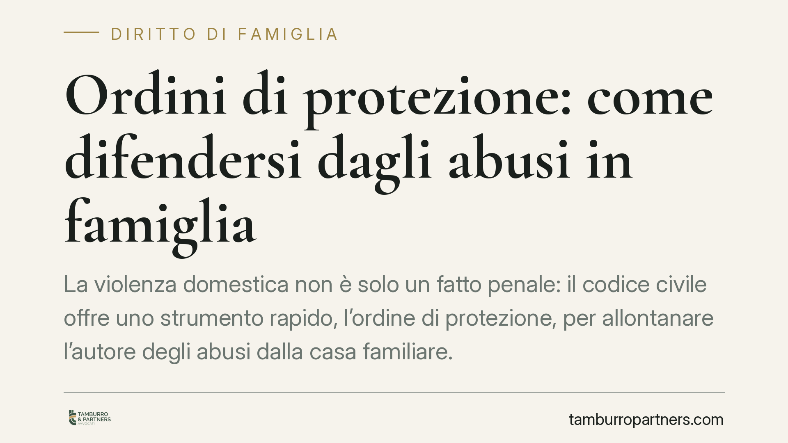

Ordini di protezione: come difendersi dagli abusi in famiglia
La violenza domestica non è solo un fatto penale: il codice civile offre uno strumento rapido, l'ordine di protezione, per allontanare l'autore degli abusi dalla casa familiare. Vediamo come funziona, quali presupposti servono e quali passi compiere per attivarlo, anche alla luce di alcune pronunce recenti dei tribunali di merito.

Il fatto e perché conta
Quando in famiglia si verificano condotte violente o gravemente pregiudizievoli, la reazione non deve necessariamente passare solo dal processo penale. L'ordinamento civile prevede una tutela più immediata: l'ordine di protezione. Serve a interrompere subito la convivenza dannosa, senza attendere i tempi di un procedimento penale che può durare anni.
La distinzione è rilevante. Il procedimento penale accerta un reato e punisce il colpevole; l'ordine di protezione ha invece una funzione preventiva e riparatoria immediata: mette al riparo la vittima nel presente.
Inquadramento normativo
Lo strumento base è l'art. 342 bis del codice civile, che consente al giudice di adottare misure quando la condotta del coniuge o del convivente "è causa di grave pregiudizio all'integrità fisica o morale ovvero alla libertà dell'altro coniuge o convivente".
Le misure possibili vanno dall'ordine di cessazione della condotta all'allontanamento dalla casa familiare (il cosiddetto *ordine di protezione contro gli abusi familiari*). Il giudice può anche vietare all'autore di avvicinarsi ai luoghi frequentati dalla vittima e disporre l'intervento dei servizi sociali o di centri antiviolenza.
Sul piano procedurale, la riforma Cartabia ha ricollocato la disciplina nell'art. 473-bis.69 del codice di procedura civile, che regola il rito applicabile a questi provvedimenti nell'ambito unificato del contenzioso familiare. Il procedimento è pensato per essere rapido: il giudice può provvedere anche con decreto, sentite le parti.
Sul versante sanzionatorio, chi viola l'ordine risponde ai sensi dell'art. 388 del codice penale (mancata esecuzione dolosa di un provvedimento del giudice). Non si tratta quindi di un provvedimento privo di sanzione: l'inosservanza ha conseguenze penali autonome.
Cosa dice la giurisprudenza recente
I tribunali di merito hanno progressivamente allargato la lettura del "grave pregiudizio". Non serve una lesione fisica: il Tribunale di Pavia ha valorizzato anche la violenza psicologica e le condotte vessatorie reiterate. Il Tribunale di Firenze ha ribadito la tutela dei figli minori, che sono vittime dirette anche quando assistono alla violenza tra i genitori (la cosiddetta violenza assistita). Il Tribunale di Rieti, in linea con l'orientamento più recente, ha confermato la possibilità di provvedimenti d'urgenza a tutela dell'intero nucleo.
È un dato che conviene tenere presente: la prova non deve essere necessariamente quella di un pestaggio. Contano anche le condotte di controllo, isolamento e umiliazione sistematica.
Implicazioni pratiche
Per chi subisce abusi, questo significa avere una via d'uscita più veloce del processo penale. L'ordine di protezione può essere chiesto anche dai conviventi di fatto, non solo dai coniugi, e prescinde dall'esistenza di un matrimonio o di una separazione già avviata.
Attenzione però a due aspetti. Il primo: l'ordine ha una durata limitata, prorogabile solo in presenza di gravi motivi. Non è una soluzione definitiva, ma un ponte verso decisioni più stabili (separazione, affidamento dei figli, misure penali). Il secondo: la richiesta va documentata. Più elementi si portano al giudice, più solida è la tutela.
Cosa fare in concreto
- Mettere subito in sicurezza sé e i figli: in caso di pericolo immediato chiamare il 112 o il 1522 (numero antiviolenza) e rivolgersi al pronto soccorso, chiedendo che il referto descriva con precisione le lesioni.
- Raccogliere e conservare le prove: messaggi, registrazioni, certificati medici, testimonianze. Documentare date e circostanze in un diario dei fatti.
- Depositare il ricorso per l'ordine di protezione ai sensi dell'art. 342 bis c.c., allegando la documentazione raccolta.
- Coinvolgere i servizi sociali e i centri antiviolenza, che possono fornire supporto e relazioni utili al procedimento.
- Farsi assistere da un avvocato fin dalla prima fase: consigliamo di valutare in parallelo l'azione civile e quella penale, perché operano su piani diversi e complementari.
Agire tempestivamente, con prove ordinate, è il fattore che più incide sull'efficacia della tutela.
---
*Contributo informativo a cura di Tamburro & Partners - Avv. Giuseppe Tamburro. Non costituisce parere legale.*
Ogni famiglia ha il suo equilibrio.
Separazione, divorzio, affidamento, assegno: se vuoi un confronto riservato su una specifica situazione, scrivi allo studio. Ti rispondiamo entro un giorno lavorativo.